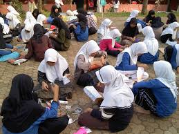

Pondok Pesantren EL SYIFA
Selamat Datang di Pesantren Kami
Membangun Generasi Berakhlak Mulia dan Berilmu
PONDOK PESANTREN EL SYIFA
Pondok Pesantren EL Syifa ini memiliki program yang inovatif, terintegrasi dan bertaraf internasional. Metode pembelajaran yang up to date dan disesuaikan dengan standar internasional
Softskills dan Character Building Program Santri dibentuk menjadi individu yang kreatif, inovatif, kuat tangguh berintegritas dan memiliki moral tinggi. Mereka diajarkan untuk menjadi pribadi yang bertanggung jawab, jujur, dan memiliki empati terhadap sesama dengan menginternalisasikan lima nilai utama PBI Giri Majdi dalam kegiatan sehari-hari, yaitu: integritas, inovasi, kolaborasi, keunggulan, dan kesalehan
Akselerasi Tahfidzhul Qur’ān : Program Akselerasi Tahfidhul Qur’ān dirancang untuk menyelesaikan setoran hafalan Al-Qur’an 30 juz selama satu semester (enam bulan)*. Menghafal, memahami esensi dan maknanya Al Qur'an. Akselarasi Bahasa Asing : Melalui program ini, santri diberikan peluang emas untuk menguasai berbagai bahasa internasional. Hasilnya, mereka tidak hanya siap berdialog dengan ulama dan cendekiawan global, tetapi juga memiliki bekal kuat untuk melanjutkan studi ke luar negeri.
Kegiatan
Kegiatan di pondok pesantren meliputi kegiatan keagamaan, olahraga, ekstrakurikuler, dan kegiatan untuk melatih kepemimpinan: Keagamaan: Shalat berjamaah, hafalan Al-Qur'an, pelajaran agama, dan tadarus Al-Qur'an Olahraga: Sepak bola, basket, badminton, dan voli Ekstrakurikuler: Seni bela diri, seni musik, Qiraah, kaligrafi, dan lain-lain Kepemimpinan: Organisasi kepramukaan dan organisasi santri Kegiatan lain: Khitobah, musyawarah, bahtsul masail, nedes, marhabanan, dan ro'an
Program Unggulan

Program unggulan di pondok pesantren EL Syifa ini yang tak kalah penting ialah Tahfidzul Qur'an. Dengan adanya program tahfidz, seluruh siswa (santri) dapat memupuk dirinya dengan semangat qur'ani, sehingga mampu melahirkan generasi yang berkarakter dan berpegang teguh terhadap Al-Qur'an, karena bagaimanapun Al-Quran adalah relevansi Mahakarya yang berisikan firman Allah Swt. Hal ini tidak diragukan lagi guna menjawab berbagai macam tantangan zaman yang semakin kompleks. T
Tentang Kami
MENGENAL DUNIA PESANTREN
Pesantren, atau pondok pesantren adalah sebuah lembaga pendidikan agama khas Indonesia --khususnya Jawa-- telah menjadi sebuah lembaga yang sudah mengakar dalam masyarakat. Hampir semua orang kenal dengan lembaga yang bernama pesantren tersebut. Sejarah munculnya pesantren oleh beberapa ahli dikatakan dimulai seiring dengan datangnya Islam ke Indonesia, tepatnya di daerah Aceh, sementara pendapat lain menyebutkan bahwa pesantren muncul pertama kali di Jawa dibawa oleh syeikh Maulana Malik Ibrahim , tepatnya di desa Gapura, Gresik, Jawa Timur. Dan tokoh yang paling dianggap berhasil mengembangkan dan mendidik generasi ulama pasa saat itu adalah Sunan Ampel yang mendirikan pesantren di Kembang Kuning, Surabaya.
1. kiai sebagai pimpinan, pendidik dan tokoh panutan, 2. santri sebagai peserta didik atau siswa, 3. masjid sebagai tempat berjama’ah shalat dan kegiatan belajar-mengajar, 4. pondok sebagai tempat tinggal santri. Sedangkan dari segi non-fisik, yaitu pengajian yang disampaikan dengan berbagai metode yang secara umum memiliki keragaman, meski tidak mendasar sifatnya. Pada awalnya pesantren merupakan lembaga pendidikan dan pengajaran agama Islam yang diselenggarakan dengan cara non-klasikal, dimana seorang kiai mengajar para santrinya berdasarkan kitab-kitab yang ditulis dengan bahasa Arab tanpa harakat --yang sering disebut dengan kitab gundul-- oleh para ulama’ abad pertengahan (antara abad 12-16) yang menggunakan tempat di rumah kiai, masjid, atau teras asrama. Pesantren demikian ini sering disebut dengan pesantren salaf, tradisional. Sebutan pesantren tradisional terkait dengan sistem pembelajaran dan kurikulum.